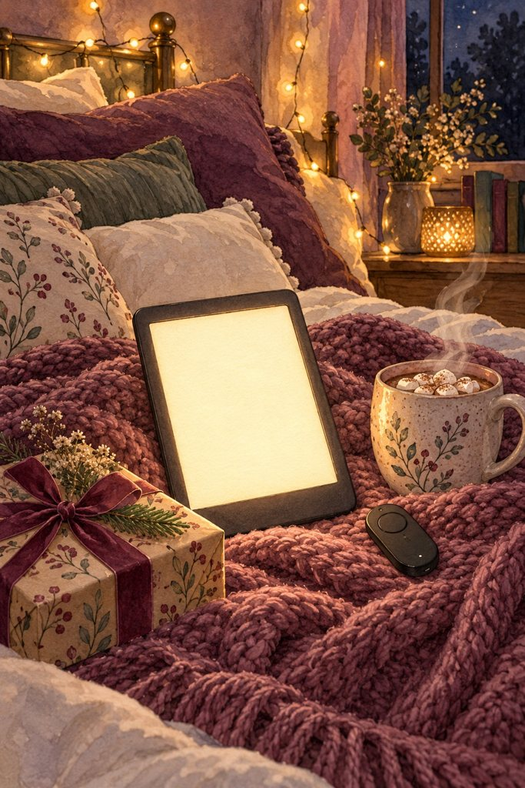
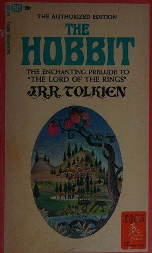
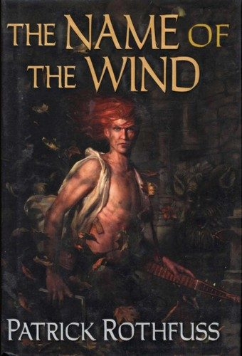
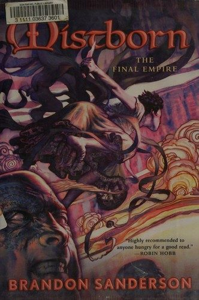

Find your next favorite book
Hand-picked reading lists for romantasy, fantasy, romance and thriller readers: books like the ones you loved, trope lists and ways to read or listen free.
Holiday gift guides
20 Gifts for Book Lovers They'll Actually Use

10 Gifts for Kindle Lovers (Kindle Girlies Approved)
Reading lists


12 Books Like Fourth Wing to Read Next


12 Books Like A Court of Thorns and Roses

15 Best Romantasy Books for Your TBR

12 Enemies to Lovers Books Worth the Wait



12 Fantasy Books Everyone Should Read


12 Romance Books to Read Next


12 Thriller Books You Won't Be Able to Put Down
10 Books Like Quicksilver by Callie Hart


11 Books Like The Housemaid to Read Next


10 Cozy Fantasy Books That Feel Like a Warm Hug
Printable reading checklists
Printable Romantasy TBR Checklist: 20 Books
Printable Thriller TBR Checklist: 12 Books
Printable Romance TBR Checklist: 15 Books
From our shop: bookish printables
Launch sale: 25% off everything until Nov 2
Watercolor reading journals, bookmarks and Kindle lock screens made for romantasy, fantasy, romance and thriller readers. Instant download.
Visit the shop
Free reading tools
Read more for less
Audible usually gives new members a free trial: pick an audiobook with your credit and keep it, even if you cancel before the trial ends. Kindle Unlimited also has a free trial with thousands of romantasy and romance titles included.
Try Audible free (paid link) Try Kindle Unlimited (paid link)